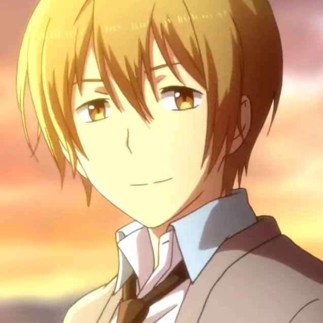
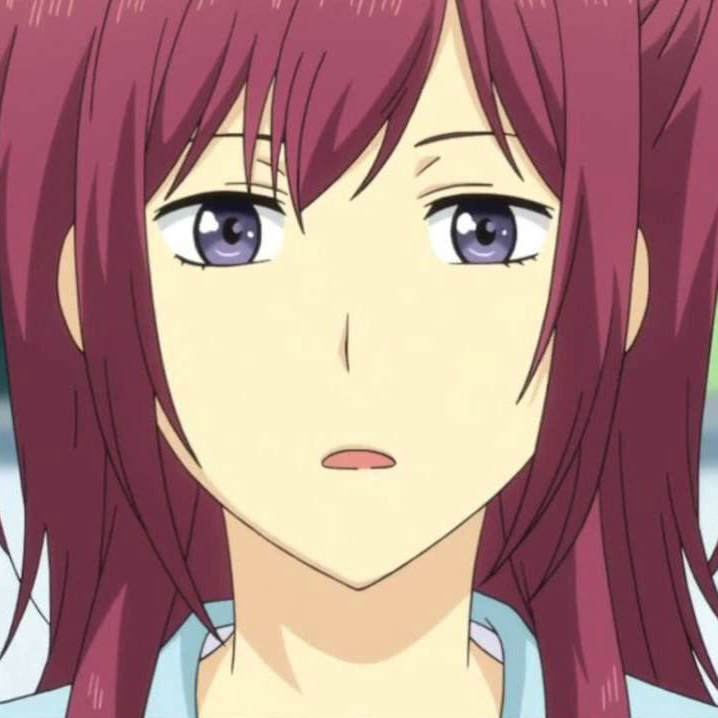

About Kaizaki Arata
Arata Kaizaki is a 27-year-old, unemployed man who has failed at each and every job interview he has had after quitting his last company where he only lasted three months.
His hopeless lifestyle took a turn when he was invited to become the Test Subject No. 002 in the Kanto Branch of the ReLIFE program under the watchful eye of Ryō Yoake to change his life for the better.
Kaizaki Arata and Yoake Ryo
Characteristics
- Supporting
- Responsible
- Helpfull
- Confronting, depending on the situation
Kaizaki Arata's Friends
- Yoake Ryo 
- Hishiro Chizuru
- Onoya An
- Kariu Rena 
- Oga Kazuomi